0%
บทเรียนนี้ออกแบบมาให้นักเรียนสามารถเรียนรู้ด้วยตนเองผ่านระบบ Scrollytelling เพียงแค่เลื่อนหน้าจอขึ้น-ลง เนื้อหาแต่ละส่วนจะปรากฏเป็นข้อความบรรยายพร้อมภาพประกอบในรูปแบบ “สติ๊กเกอร์” เพื่อช่วยให้เข้าใจเนื้อหาได้ง่ายขึ้น
ระหว่างเรียน นักเรียนจะพบคำถามแทรกอยู่เป็นระยะ (8 คะแนน) กรุณาตอบคำถามให้ครบทุกข้อก่อนกดส่งคำตอบ ขอให้สนุกกับการเรียนรู้ครับ!
สวัสดีครับนักเรียนทุกคน!
วันนี้เราจะมาทบทวนเรื่องรูปเรขาคณิตสองมิติและสามมิติกัน
ในบทเรียนนี้อาจารย์จะไม่ได้เน้นเนื้อหาเยอะเหมือนที่ผ่านมานะครับ
แต่จะให้ทุกคนได้ลองตอบคำถามกันเอง
ขอเตือนนิดนึงว่า เราจะเน้นเรื่อง ‘หน้าตัด’
และ ‘ภาพที่ได้จากการมองด้านหน้า ด้านข้าง และด้านบน’ ของรูปเรขาคณิตสามมิติ
ก่อนอื่นเหมือนเดิมครับ
อีเมล
รหัสนักเรียน
เป็นนักเรียน ม.\(2\) ห้อง เลือก 1 2 3 4 5 6 7 8 9 10 11 12 13 14 15
คำนำหน้าชื่อ เลือก เด็กชาย เด็กหญิง นาย นางสาว
ชื่อ - นามสกุล
พร้อมแล้วไปลุยกันเลยครับ!”
เรามาดูตัวอย่างของรูปเรขาคณิตสามิติที่นักเรียนเคยเจอกันมาดีกว่า
รูปเรขาคณิต (geometric figure) เป็นรูปที่ประกอบด้วย จุด เส้นตรง ส่วนของเส้นตรง เส้นโค้ง เป็นต้น อย่างน้อยหนึ่งอย่าง
รูปสามเหลี่ยม (triangle)
รูปสี่เหลี่ยม (quadrilateral)
รูปหลายเหลี่ยม (polygon)
และวงกลม (circle)
เป็นตัวอย่างของ รูปเรขาคณิตสองมิติ (two-dimentional geometric figure)
ปริซึม (prism)
ทรงกระบอก (cylinder)
พีระมิด (pyramid)
กรวย (cone)
และทรงกลม (sphere)
เป็นตัวอย่างของ รูปเรขาคณิตสามมิติ (three-dimensional geometric figure)
เมื่อใช้ของมีคมตัดผ่านวัตถุให้ขาดออกจากกัน ดังรูป
บริเวณของเนื้อวัตถุที่ของมีคมผ่าน เรียกว่า หน้าตัด
เมื่อมีรูปเรขาคณิตสามมิติ และใช้ระนาบ (plan) ตัดรูปเรขาคณิตสามมิติ
จะได้หน้าตัด หรือในทางคณิตศาสตร์ เรียกว่า ภาคตัด (section)
ซึ่งหน้าตัดที่ได้จากการตัด จะเป็นรูปเรขาคณิตสองมิติชนิดใด
ขึ้นอยู่กับ แนวการตัดของระนาบ ตำแหน่งที่ตัด และชนิดของรูปเรขาคณิตสามมิตินั้น
เช่น ถ้าใช้ระนาบตัดปริซึมสามเหลี่ยมในแนวตั้งฉากกับฐานที่ตำแหน่งต่าง ๆ ของปริซึม
จะได้หน้าตัดเป็นรูปสี่เหลี่ยมที่มีขนาดแตกต่างกัน ดังรูป
ถ้าใช้ระนาบตัดปริซึมสามเหลี่ยมในแนวขนานกับฐานที่ตำแหน่งต่าง ๆ ของปริซึม
จะได้หน้าตัดเป็นรูปสามเหลี่ยม เช่นเดียวกับฐานของปริซึม ดังรูป
สำหรับการทบทวนในครั้งนี้
อาจารย์กำหนดด้านหน้า
ด้านข้าง
และด้านบนของรูปเรขาคณิตสามมิติ ดังรูป
ถ้าเราพิจารณาการมองรูปเรขาคณิตสามมิติในทิศทางหรือแนวสายตาตั้งฉากกับด้านหน้า ด้านข้าง ด้านบน ตามลำดับ ดังรูป
ภาพที่ได้จากการมองรูปเรขาคณิตสามมิติด้านหน้า คือ
รูปเรขาคณิตสองมิติส่วนที่แรเงานี้ เรียกว่า ภาพด้านหน้า (front view)
ภาพที่ได้จากการมองรูปเรขาคณิตสามมิติด้านข้าง
คือ รูปเรขาคณิตสองมิติส่วนที่แรเงาข้างล่างนี้ เรียกว่า ภาพด้านข้าง (side view)
ภาพที่ได้จากการมองรูปเรขาคณิตสามมิติด้านบน
คือ รูปเรขาคณิตสองมิติส่วนที่แรเงาข้างล่างนี้ เรียกว่า ภาพด้านบน (top view)
ในทำนองเดียวกันกับรูปเรขาคณิตสามมิติที่ประกอบขึ้นจากลูกบาศก์ ต่อไปนี้
ทำให้เราได้ภาพด้านหน้า คือ
ภาพด้านข้าง คือ
และภาพด้านบน คือ
และเพื่อให้ทราบว่ามีลูกบาศก์เรียงซ้อนกันอยู่กี่ลูกในด้านที่มอง
จึงเขียนตัวเลขกำกับไว้ในรูปสี่เหลี่ยมจัตุรัสนั้น ดังนี้
จากการทบทวนที่ผ่านมา
เรามาลองตอบคำถามเพื่อวัดความเข้าใจกันก่อนที่จบบทเรียนนะครับ
จงพิจารณาว่ารูปใดเป็นภาพด้านหน้า ภาพด้านข้าง และภาพด้านบนของรูปเรขาคณิตที่กำหนดให้ในแต่ละข้อต่อไปนี้
และอย่าลืมช่วยดูให้ด้วยนะว่ารูปใดไม่ใช่ภาพจากการมองรูปเรขาคณิตสามมิตินั้น
ก. เลือก เป็นภาพด้านหน้า เป็นภาพด้านข้าง เป็นภาพด้านบน ไม่ใช่ภาพทีได้จากการมอง (1 point)
ข. เลือก เป็นภาพด้านหน้า เป็นภาพด้านข้าง เป็นภาพด้านบน ไม่ใช่ภาพทีได้จากการมอง (1 point)
ค. เลือก เป็นภาพด้านหน้า เป็นภาพด้านข้าง เป็นภาพด้านบน ไม่ใช่ภาพทีได้จากการมอง (1 point)
ง. เลือก เป็นภาพด้านหน้า เป็นภาพด้านข้าง เป็นภาพด้านบน ไม่ใช่ภาพทีได้จากการมอง (1 point)
และข้อสุดท้าย
จบบทเรียนนี้แล้ว
และสุดท้าย อยากให้นักเรียนลองประเมินตนเองดูนะครับ
ว่า “วันนี้ฉันเข้าใจบทเรียนนี้มากน้อยแค่ไหน?”
ให้คะแนนตนเองในระดับ 1-5
1 = ยังไม่เข้าใจเลย
3 = พอเข้าใจบ้าง
5 = เข้าใจดีมากและสามารถอธิบายให้เพื่อนฟังได้
คะแนนที่ให้ตนเอง คือ 5 คะแนน
แล้วพบกันในชั้นเรียนครับ
ยืนยันรหัสนักเรียน แล้วค่อยกดส่งนะ
ส่งคำตอบ
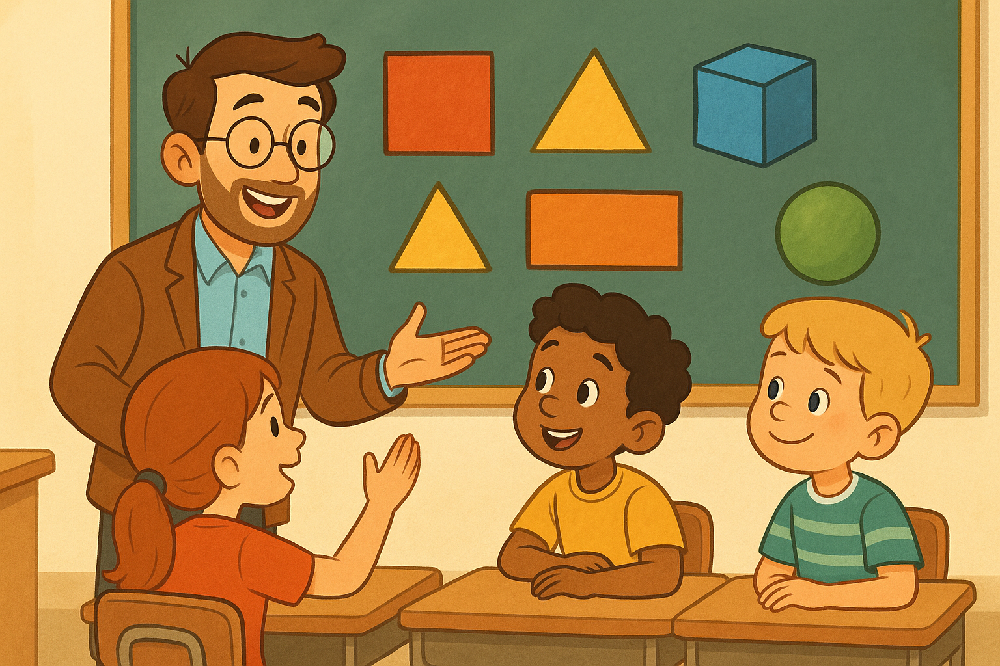
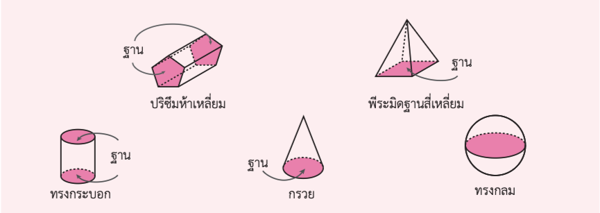
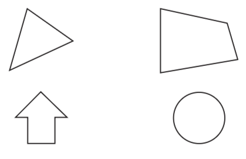
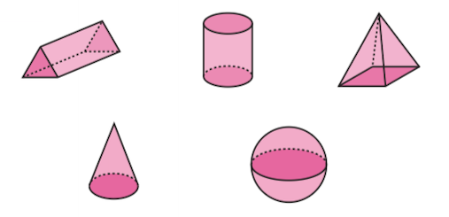
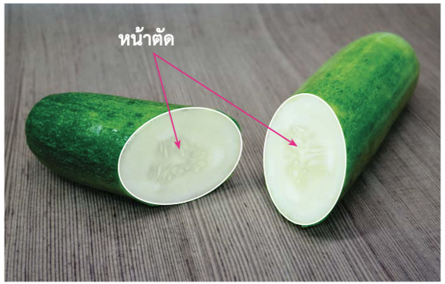
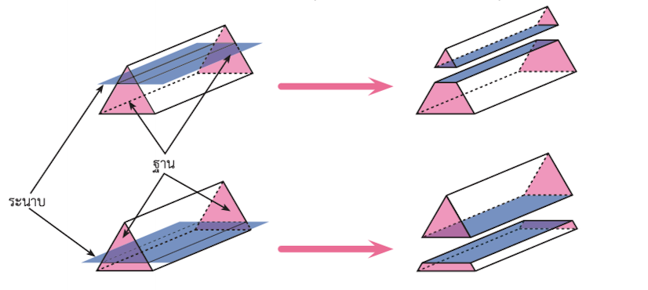
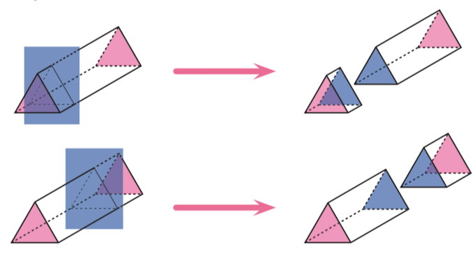
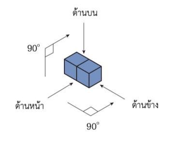
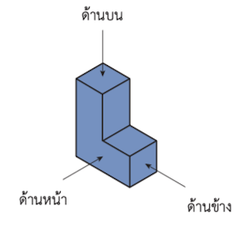
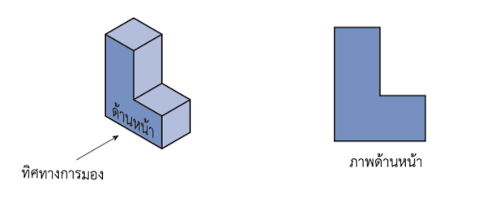
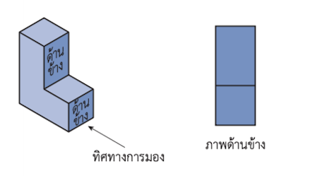
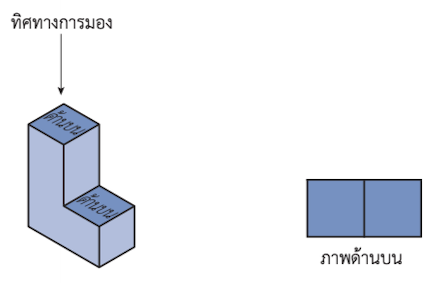
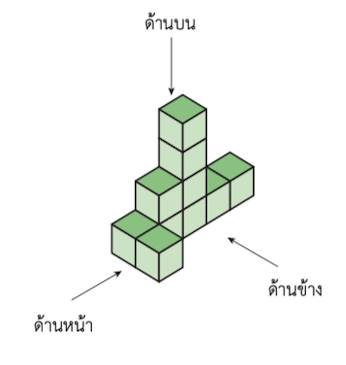
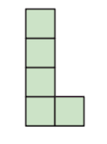
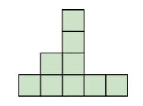
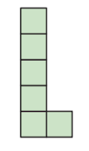
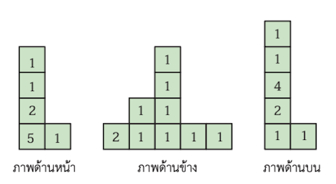
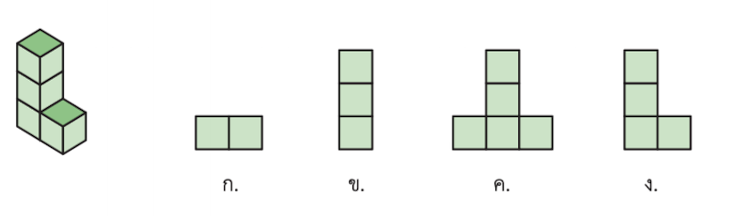
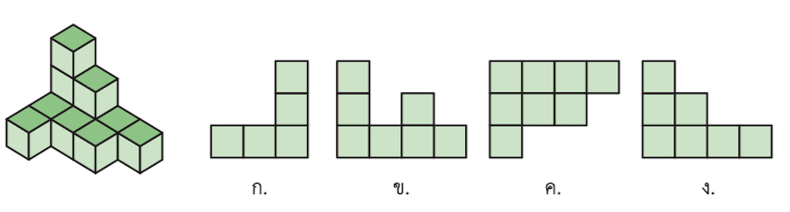
ถ้ากดปุ่ม “ส่งคำตอบ” แล้วไม่มีการตอบสนอง แสดงว่ายังตอบไม่ครบ ให้กลับไปดูใหม่นะครับ
เราได้บันทึกคำตอบของคุณไว้แล้ว คุณสามารถกดย้อนกลับ แล้วเข้ามาที่เมนูเดิม เพื่อทบทวนและส่งคำตอบเพิ่มเติมได้ กลับหน้าหลัก